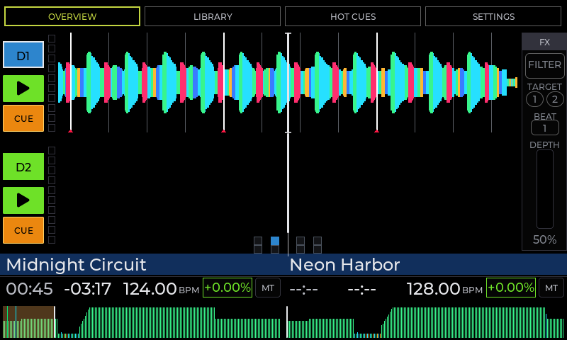
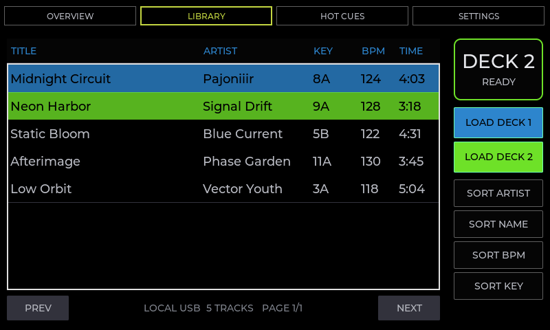
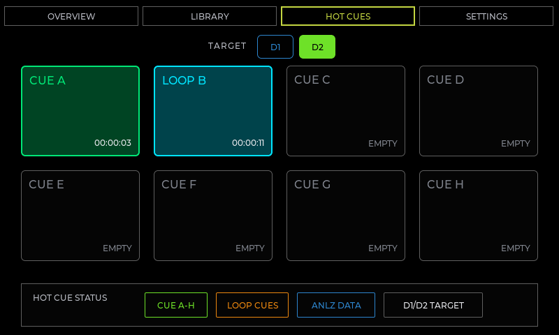
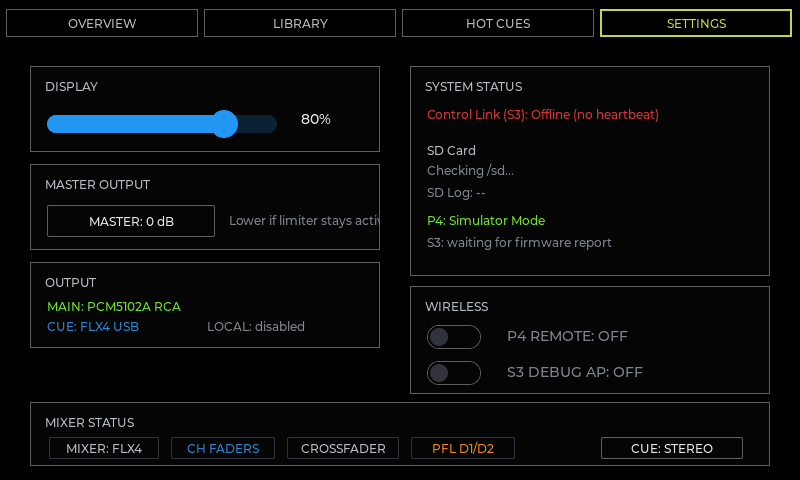
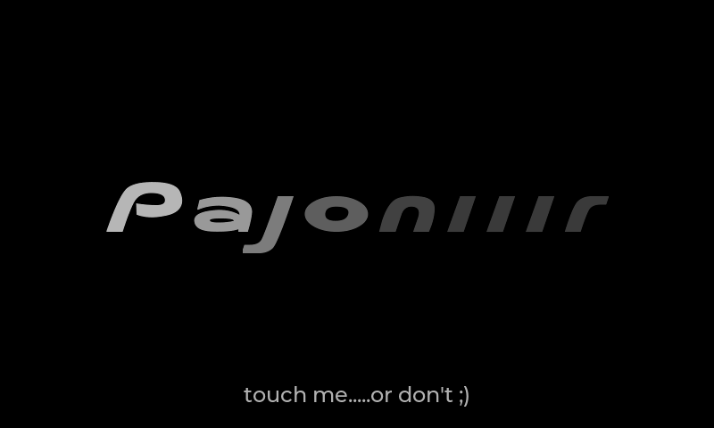

master source after the P4 dual-USB architecture was merged. The installed and qualified beta image remains the immutable M2 tag. Core playback, real MP3/WAV/FLAC media, combined audio/DSP soak, USB lifecycle, Wi-Fi/Web and OTA qualification have passed or been formally accepted for the M2 beta scope. This is still not an unrestricted production-release claim; production provisioning/security decisions and a new exact production build/install/smoke record remain open.Standalone engine
The ESP32-P4 owns playback, mixer state, DSP and the UI. No performance computer is required.
Web Remote
Control decks, mixer, library and maintenance functions from a phone, tablet or laptop.
Dual USB roles
USB0 is dedicated to Rekordbox media while USB1 carries FLX4 MIDI and USB Audio.
Signed OTA
Local browser upload and service-network pull updates both validate signed firmware packages.
Quick start
The ESP32-P4 is the sole runtime authority. It plays the tracks, owns deck and mixer state, drives the display and communicates directly with the FLX4. The physical controller, touch UI and browser Remote Control all operate the same P4-owned state; no performance computer is required.
Pajoniiir, then open http://pajoniiir.local or http://192.168.4.1.Connections and signal roles
| Function | Connection | Use |
|---|---|---|
| Music library | USB0 host | Rekordbox storage / MSC medium |
| DJ controller | USB1 host | DDJ-FLX4 MIDI IN/OUT + 4-channel USB Audio |
| MAIN program | PCM5102A / RCA | Main stereo output to amplifier/mixer |
| Headphone cue | DDJ-FLX4 headphones | UAC channels 3/4 monitor/cue |
| Local user interface | P4 display / touch | Overview, Library, Hot Cues and Settings |
| Remote user interface | Wi-Fi Web Controller | Browser-based deck, mixer, library and maintenance controls |
| Service / recovery | Wi-Fi or P4 service connector | Diagnostics, profile service, signed OTA and wired recovery |
Power note: downstream USB VBUS must be protected and current-limited. Do not join independent supplies with a passive Y-cable and do not inject raw 5 V into USB-C pins.
On-device display
The P4 LVGL interface provides the primary stand-alone visual surface. It remains independent of whether Wi-Fi Remote is enabled.





Overview
Shows the active deck state and performance information. Waveform, transport and analysis-derived information are presented locally.
Library
Browses the Rekordbox-exported collection on USB0. The FLX4 Browse encoder moves the selection; LOAD 1 / LOAD 2 loads the selected track.
Hot Cues
Provides the performance cue view for the active deck and the currently available cue state.
Settings
Contains device/service controls including Wi-Fi Remote. Wi-Fi bring-up is asynchronous so the touch UI does not block while the ESP32-C6 radio/ESP-Hosted link starts.
Browse rotate
Moves the Library selection. In supported Overview contexts it can also control waveform navigation/zoom behavior.
Browse press
Toggles the UI between Library and Overview. It does not load a deck.
Idle screensaver
The default idle timeout is 2 minutes. Touch/controller activity restores the previous screen. Playback inhibits the idle screensaver, and the M2 beta also verifies that the first Web Controller transport command after a long idle wake is still executed rather than being consumed only as a wake action.
DDJ-FLX4 core controls
The DDJ-FLX4 is the main physical performance surface while the P4 owns playback, mixer state and DSP. Controller LEDs are driven from P4-owned state.
PLAY / PAUSE
Starts or pauses the selected deck.
CUE
Back-cue / default cue behavior.
JOG
Platter touch supports scratch; platter/side movement supports pitch bend. SHIFT+jog search is implemented.
TEMPO / MASTER TEMPO
Per-deck pitch uses the selected tempo range; SHIFT+Beat Sync cycles ±6%, ±10% and ±16% with ±10% as default. Master Tempo is P4-owned and is included in the qualified mixed-rate M2 audio/DSP tests.
BEAT SYNC
Matches BPM to the other deck and performs one-shot beat-phase alignment when beatgrids are available. Continuous follow is not implemented.
LOOPS
Loop In, Loop Out, Reloop/Exit, halve and double are implemented and hardware-verified. Beat Loop and Beat Jump pad behavior is also verified. Advanced shifted loop-adjust/reloop-stop variants exist in firmware but are not part of the qualified M2 operator surface unless explicitly listed below.
Mixer and monitoring
| Control | Current behavior |
|---|---|
| Channel faders / Crossfader | Implemented and hardware verified |
| Master Level / Trim | Implemented; hardware-smoked / verified |
| EQ High / Mid / Low | Implemented in P4 DSP |
| CH1 / CH2 CUE | PFL toggle to headphone cue path |
| Headphones Mix / Level | Implemented; FLX4 USB headphone path hardware-smoked |
| Master Cue | Implemented with P4-owned state and LED feedback |
| Smart CFX | P4 filter-DSP macro with LED state |
| Smart Fader | P4 transition-assist behavior with LED state |
Performance pads and effects
Hot Cues
Hot Cue pads 1–8 are implemented on both decks for set/recall. SHIFT + Hot Cue pad clears the corresponding cue. The normal pad LED state is P4-owned and restored after reconnect.
Beat Jump / Beat Loop
Beat Jump pads and normal/shifted Beat Loop pads are implemented; the core pad behavior has hardware acceptance on both decks. Shifted Beat Jump size-page controls remain outside the qualified M2 operator surface.
Pad FX
Pad FX1 and Pad FX2 input ranges are implemented in the P4 DSP path. Filter/Echo pad behavior and Echo release-tail operation have hardware smoke coverage; use those as the qualified M2 Pad FX baseline.
Beat FX
Beat FX target, depth and ON/OFF are P4-owned. FILTER and ECHO have hardware acceptance. FLANGER and DELAY are implemented in DSP but remain outside the fully hardware-qualified M2 effect subset.
Intentionally out of scope
Keyboard/Stems, Sampler and Key Shift pad modes are intentionally ignored in the standalone product. Some additional shifted FLX4 functions are mapped for compatibility or testing but are not part of the supported M2 user workflow.
Standalone behavior
Pajoniiir does not attempt to clone every rekordbox-on-PC behavior printed on the FLX4. The supported behavior is the P4-owned standalone mapping described in this manual and the project MIDI map.
Rekordbox USB library
USB0 is dedicated to the Rekordbox storage medium. The P4 reads the exported library and analysis data, exposes tracks in Library, and uses available BPM, beatgrid, waveform and cue information.
Qualified M2 media formats
Real MP3, PCM16 WAV and FLAC playback are inside the qualified M2 beta scope. WAV/FLAC natural-EOF playback and simultaneous MP3+FLAC / MP3+WAV windows completed with clean audio and no gated cache/audio fault deltas.
Combined playback validation
The M2 beta also passed focused mixed-rate dual-Master-Tempo testing and a final multi-hour combined scratch/FX/MAIN/cue soak without strict fault deltas or audible defects.
Local browsing
Use the on-device Library or the FLX4 Browse encoder and LOAD buttons.
Remote browsing
The Web Controller can read the same USB library, search by title/artist and load a selected item directly to Deck 1 or Deck 2.
For best results, prepare the medium with Rekordbox export before use. Do not remove USB0 while a track is loading unless you are intentionally testing recovery behavior.
Embedded Web Controller
Pajoniiir contains its own HTTP web server and browser-based remote interface. The page is served directly by the P4; it is not a cloud service and does not require an external web server. A phone, tablet or laptop connected to the device AP can become an additional operator surface.
Open the Web Controller
Pajoniiir.Pajoniiir.http://pajoniiir.local. If mDNS is unavailable on the client, use http://192.168.4.1.What the browser can control
Deck 1 / Deck 2
- Track title and artist
- Playback state
- Elapsed / remaining time
- BPM and pitch
- PLAY / PAUSE and CUE
- 4-beat loop and loop clear
- Tempo/pitch control
- Tap/click progress to seek
Mixer
- CH1 and CH2 channel faders
- CH1 / CH2 PFL cue
- Crossfader
- Master level indication based on the real master limiter peak
USB Browser
- Reads the active USB0 library
- Searches title and artist
- Shows BPM
- Loads tracks to D1 or D2
- Refreshes if the underlying library generation changes
Controller Profile
- Reads available controller profiles
- Accepts compiled
profile.s3bin - Profile ID / SD directory selection
- Optional overwrite
- Format and CRC are validated before replacement
P4 Firmware Update
- Reads firmware status
- Uploads signed
.ddjotabundles - Shows transfer progress
- Stops playback during update
Update Server
- Stores service-network SSID
- Stores passphrase locally
- Stores update base URL
- Tests STA connectivity
- Checks for a newer release
- Downloads and installs an offered signed release
The browser polls live status frequently and continuous sliders are rate-limited before commands are sent to the embedded HTTP server. If the connection indicator goes offline, stop issuing commands and verify the Wi-Fi state before continuing.
Wi-Fi AP and STA modes
The current firmware deliberately uses two different Wi-Fi roles. They are not two equivalent operating modes and they are not a permanent concurrent AP+STA configuration.
Normal Remote Control
Pajoniiir creates its own local Wi-Fi network. This is the normal browser-control state.
Temporary Service Visit
The deck temporarily joins an external update/service network, performs the requested operation, then restores its own AP.
| Mode | Purpose | Web Controller | Addressing | What happens next |
|---|---|---|---|---|
| AP / SoftAP | Normal Remote Control mode. Pajoniiir creates its own local Wi-Fi network. | Available | Device: 192.168.4.1/24mDNS: pajoniiir.local | Remains active until Wi-Fi Remote is disabled or a temporary STA service operation starts. |
| STA | Temporary maintenance/update visit. Pajoniiir joins a configured external service network. | Unavailable while STA is active | Receives an IPv4 address by DHCP from the external network. | After the probe/check/download flow, firmware tears STA down and restores the Pajoniiir AP and web service. |
AP / SoftAP — normal remote operation
Network identity
SSID: Pajoniiir
Default password: Pajoniiir
Security: WPA2-PSK
AP IPv4: 192.168.4.1
Netmask: 255.255.255.0
Wi-Fi channel: 6
Client capacity and local-only behavior
The firmware allows up to four associated AP clients. This is a local service network; Pajoniiir intentionally does not present itself as the client's Internet router. A browser and a second service device can therefore coexist without the deck pretending to provide Internet access.
Pajoniiir network has no Internet connection. That does not mean the Remote Control is broken. Stay connected and open http://192.168.4.1 manually. The design intentionally avoids installing a useless default Internet route through the deck.The firmware also advertises the mDNS hostname pajoniiir.local. mDNS support varies by operating system and client configuration, so the fixed AP address 192.168.4.1 is the recovery/fallback address.
STA — temporary service/update network
STA exists so the deck can temporarily reach an external network, primarily for update-server connectivity. It is not the normal browser-remote mode. During the transition the P4 intentionally stops the AP web/DNS services, joins the configured network, waits for a real DHCP address, performs the requested operation, then restores its own AP.
Web Remote available→temporary STA
browser disconnects→service action
probe / check / download→Pajoniiir AP restored
reconnect browser
TEST CONNECTION
The Web Controller warns that the deck may leave its AP for up to approximately 25 seconds. It attempts to associate with the saved service SSID and obtain an IP address, then returns to AP mode. The test itself does not install firmware.
CHECK FOR UPDATE
The Web Controller warns that the deck may leave its AP for up to approximately 30 seconds while checking the update server. Nothing is installed during the check; the AP is restored afterward.
Pajoniiir SSID to return, reconnect if the client does not do so automatically, then reload the Web Controller.Updates, service network and controller profiles
The current P4-only product has two signed firmware-update workflows: local browser upload while connected to the Pajoniiir AP, and a pull-update flow that temporarily joins a configured service network.
Connect
Join the Pajoniiir AP for local OTA, or save the external service-network settings for pull OTA.
Verify
The update path validates the signed package, target metadata and image integrity before activation.
Restart & check
After restart, reconnect and verify firmware status, USB library, FLX4 control, MAIN audio and cue.
A. Local signed OTA upload
Pajoniiir AP.main-deck-p4.ddjota package intended for the P4 target.Pajoniiir, reopen the Web Controller and verify firmware status, USB library, FLX4 control/LED state, MAIN audio and headphone cue..bin through the signed web-update path. Raw images are reserved for wired recovery or explicitly defined transition procedures. Normal browser OTA uses the signed .ddjota bundle.The P4 validates the signed package before activating the inactive OTA slot. The update design checks the embedded ECDSA signature and signed image metadata including image size/hash, chip, project and version. Wrong-target or tampered bundles are intentionally rejected.
B. Update Server / pull OTA
The UPDATE SERVER panel in the Web Controller configures the external network that the P4 may visit temporarily. It is separate from the normal Pajoniiir AP credentials.
| Web Controller field/action | Meaning |
|---|---|
| Wi-Fi network (SSID) | External service/update network that the P4 will temporarily join in STA mode. |
| Passphrase | Credential for that external network. The stored passphrase is not returned to the browser page. |
| Update base URL | Base location used by the pull-update service to discover/download releases. |
| SAVE | Stores the entered service-network/update configuration on the deck. |
| TEST CONNECTION | Temporary AP→STA→AP round trip. Verifies association and DHCP without installing firmware. |
| CHECK FOR UPDATE | Temporarily joins the service network and checks whether a newer valid release is offered. |
| INSTALL | Downloads the selected offered release, verifies it and restarts into the update flow. |
| CLEAR WI-FI | Forgets the saved update network, passphrase and update URL. |
C. Controller profile service
The Web Controller also provides a maintenance path for controller profiles. Upload only the compiled profile.s3bin format expected by the firmware. Choose the profile ID / SD directory and enable overwrite only when intentionally replacing an existing profile. The P4 validates the profile format and CRC before committing the replacement.
D. API and remote-control safeguards
The embedded API accepts the canonical Pajoniiir host identity / active AP address and state-changing browser requests use a dedicated control-request marker. These checks are part of the current protection against accidental cross-site mutations and DNS-rebinding-style access. The AP is a local service surface. The shared service-password risk is explicitly accepted for the M2 beta scope; firmware authenticity remains protected by signed OTA. Revisit per-device credentials before wider deployment if the exposure model changes.
Power, shutdown and handling
Before power-up
Use the accepted common-5 V / protected dual-VBUS wiring and enclosure arrangement. The M2 beta bench electrical gate is closed for the unchanged topology; repeat and record the qualification after any wiring, supply, USB-power or enclosure change.
Before power-off
Stop playback and make sure no OTA, profile upload or service write is active. Avoid removing media during a load/write operation.
During OTA
Keep power stable until the update completes and the controller restarts. Do not use the unit for performance while firmware is being written.
During STA service
An AP disappearance during a connection test/update check is expected. Do not power-cycle merely because the browser loses contact during this controlled transition.
Transport
Disconnect USB and RCA cables before moving the unit. Protect connectors from lateral load and keep ventilation paths clear.
Recovery access
Keep the confirmed wired P4 service/recovery path accessible for the M2 beta and for future signed-release validation. Wired recovery remains the fallback for bootloader/partition/signing-baseline changes.
Troubleshooting
The Pajoniiir Wi-Fi network is not visible
Open Settings on the device and confirm Wi-Fi Remote is enabled. Allow the ESP-Hosted/C6 radio link time to start. If the feature was rapidly toggled, leave it enabled and allow the asynchronous worker to settle on the requested state.
My phone says “No Internet” after joining Pajoniiir
This is expected. The AP is a local control/service network and intentionally does not act as an Internet router. Stay connected and open http://192.168.4.1.
pajoniiir.local does not open
mDNS is not guaranteed on every client. Use the fixed AP address http://192.168.4.1. Also confirm you are actually connected to the Pajoniiir SSID.
The Web Controller status indicator is offline
Confirm the client is still on the Pajoniiir AP, then reload the page. If you just started TEST CONNECTION, CHECK FOR UPDATE or an update download, the AP may be intentionally unavailable while the P4 is in temporary STA mode.
The browser disconnects when I test the update network
That is normal. TEST CONNECTION deliberately leaves the Pajoniiir AP, enters STA mode, attempts association/DHCP, then restores the AP. The page can be unreachable for up to roughly 25 seconds. Reconnect to Pajoniiir when it returns.
CHECK FOR UPDATE makes the web page disappear
Expected. The device can leave its AP for up to roughly 30 seconds while checking the external update service. The check does not install anything. When the AP returns, reconnect/reload and read the resulting status.
The STA connection test fails
Verify the saved service SSID and passphrase, confirm that network is in range, and confirm its DHCP server can issue an IPv4 address. A Wi-Fi association without an assigned IP is not considered a successful service connection.
The Library is empty or USB0 is not detected
Confirm the Rekordbox medium is in USB0, not USB1. Re-seat the medium once, wait for the mount/library refresh, and confirm the device has a valid Rekordbox export. If the problem follows the medium, test another known-good export.
The FLX4 controls do not respond
Verify the FLX4 is on USB1. Confirm the controller is powered/enumerated and that the display/system is otherwise responsive. The current firmware has validated reconnect recovery, so a controlled disconnect/reconnect can be used after stopping playback if needed.
There is no MAIN audio
Check Deck PLAY state, channel fader, crossfader, Trim and Master Level. MAIN program audio leaves through the Pajoniiir PCM5102A/RCA path — not the FLX4 headphone connector.
There is no headphone cue
Headphones belong on the FLX4. Enable CH1/CH2 CUE (PFL), then check Headphones Mix and Headphones Level. The cue/monitor path uses FLX4 USB-audio channels 3/4.
A local OTA package is rejected
Use the correct signed main-deck-p4.ddjota package. Wrong target, chip/project, key, signature, size, image hash, modified manifest or trailing data are intentionally rejected. Do not work around signature failures with a raw web upload.
The controller does not come back after an update
First allow the normal restart time and look for the Pajoniiir AP again. If neither the display nor AP recovers, use the defined wired P4 recovery path. Wired recovery is also required when bootloader/partition data or the trusted signing-key baseline must be replaced.
M2 beta and production boundary
Qualified M2 beta baseline
The installed beta image is the immutable annotated M2 tag at d2dabfa7561ff1e0486acc42c7acf42607654e19 on ota_0. The completed P4-only dual-USB feature is merged into master; the M2 tag remains fixed to the exact installed and qualified image.
Post-merge verification
Post-merge CI passed the complete P4 host regression suite, headless LVGL E2E/exact-screenshot gate, ESP-IDF v6.0.2 ESP32-P4 build and binary/provenance gates. Subsequent documentation-only manual changes do not alter the installed M2 firmware behavior.
Closed / accepted beta gates
Real MP3/WAV/FLAC playback, combined audio/DSP soak, dual-USB lifecycle, signed OTA and pull-OTA fault handling, common 5 V / VBUS bench acceptance and the existing enclosure configuration are closed or explicitly accepted for the M2 beta scope. A wired recovery path is confirmed.
Accepted M2 limitations
Seven advanced USB1 held-control reconnect cycles are operator-waived and closed; numeric enclosure thermal/RF/strain margins were not captured; and one shared service password is accepted for the beta deployment model. These are documented limitations, not untracked failures.
Remaining production boundary
An unrestricted production release still requires provisioning and verifying encrypted offline signing-key custody plus its separate backup, resolving the remaining rotation/Secure Boot/Flash Encryption/PMF-WPA3/SBOM decisions as applicable, selecting a new immutable production version without moving M2, then building, signing, installing and fully smoking that exact production commit and publishing its hashes, slot/version evidence and release record.